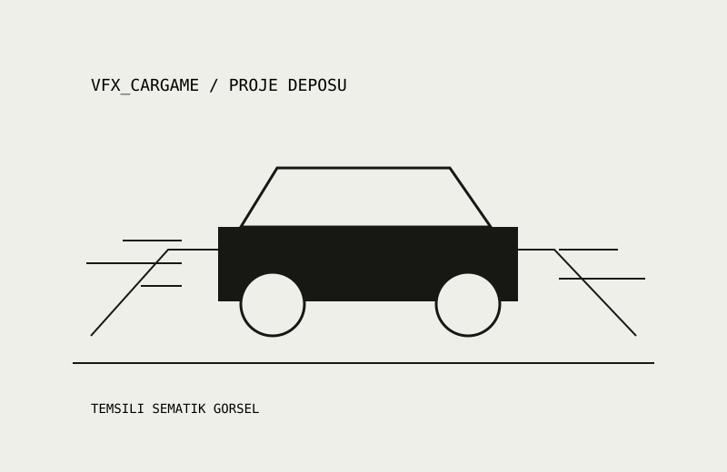

03 / UNITY · MEVCUT GITHUB ÇALIŞMASI
VFX CarGame
GitHub profilimde bulunan, VFX klasörüyle paylaşılan araç oyunu proje deposu.

Proje kaydı
Depo adı ve VFX klasörü doğrulandı. Çalıştırılabilir sürüm ya da oyun görüntüsü doğrulanmadı.
Çalışmanın odağı
Görsel efekt çalışmasını proje dosyalarıyla birlikte sunmak.
Bu açıklama herkese açık depo içeriğiyle sınırlıdır. Kişisel öğrenme kazanımları ve bu projenin hangi ders ödevine ait olduğu öğrenci tarafından doğrulanmalıdır.